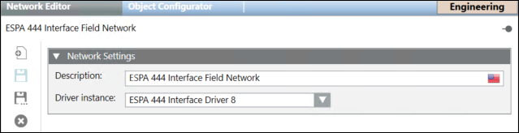

Field Networks
Notification uses various devices to deliver notifications to recipients. Field networks are a way to organize these devices into groups.
During configuration, the field network must be associated with a driver. These drivers are configurable. One driver can have multiple field networks.
Network Editor
You can create the field networks from Project > Field Networks, when you click New and select a network from the list of field networks that display.
and select a network from the list of field networks that display.
Once created you can configure the field network settings in the Network Editor tab. The Network Editor tab has following expanders:
- Network Settings Expander: It contains the following fields:
- Description: Name of the field network.
- Driver Instance: Name of the driver associated with the field network.

Toolbar | ||
Icon | Name | Description |
| Create | Creates a new field network. |
| Save | Saves the field network settings. |
| Save As | Creates a copy of the existing field network. |
| Delete | Deletes a selected field network. |